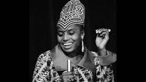
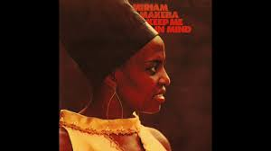
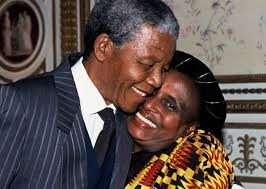
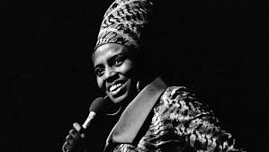
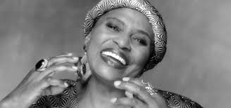

Zenzile Miriam Makeba was born on 4 March 1932 in the black township of Prospect, near Johannesburg. Her Swazi mother, Christina Makeba, was a sangoma, or traditional healer, and a domestic worker. Her Xhosa father, Caswell Makeba, was a teacher; he died when she was six years old.
When Makeba was eighteen days old, her mother was arrested and sentenced to a six-month prison term for selling umqombothi, a homemade beer brewed from malt and cornmeal. The family could not afford the small fine required to avoid a jail term, and Miriam spent the first six months of her life in jail.As a child, Makeba sang in the choir of the Kilnerton Training Institute in Pretoria, an all-black Methodist primary school that she attended for eight years. Her talent for singing earned her praise at school. Makeba was baptised a Protestant, and sang in church choirs, in English, Xhosa, Sotho, and Zulu; she later said that she learned to sing in English before she could speak the language.
The family moved to the Transvaal when Makeba was a child. After her father's death, she was forced to find employment; she did domestic work, and worked as a nanny. She described herself as a shy person at the time. Her mother worked for white families in Johannesburg, and had to live away from her six children. Makeba lived for a while with her grandmother and a large number of cousins in Pretoria. Makeba was influenced by her family's musical tastes; her mother played several traditional instruments, and her elder brother collected records, including those of Duke Ellington and Ella Fitzgerald, and taught Makeba songs. Her father played the piano, and his musical inclination was later a factor in Makeba's family accepting what was seen as a risqué choice of career.
In 1949, Makeba married James Kubay, a policeman in training, with whom she had her only child, Bongi Makeba, in 1950. Makeba was then diagnosed with breast cancer, and her husband, who was said to have beaten her, left her shortly afterwards, after a two-year marriage. A decade later she overcame cervical cancer via a hysterectomy.
Being African and extremely Afrocentric, I am drawn to the past, present and future way of life of the African people. If not for anything, but just to know to make up for the fact that I do not know the language and do not behave like my ancestors did. As an artist who patronizes poetry and music, it was evident that I would be drawn towards notable artists from the homeland such as Angélique Kidjo, Yvonne Chaka Chaka, Yvonne Chaka Chaka, Chinua Achebe, Nnedi Okorafo, Chimamanda Ngozi Adichie, Ama Atta Aidoo, Osibisa among others. The world is in an uproar due to the crimes against humanity in the form of racism, sexism and genocide. The woman I dedicate this tribute to is my hero, the woman I look to in the fight for progressive feminism. Her name is Miriam Makeba, Mama Africa.
Childhood
Early Life
While performing with the Manhattan Brothers in 1955, Makeba met Nelson Mandela, then a young lawyer; he later remembered the meeting, and that he felt that the girl he met "was going to be someone". In 1956, Gallotone Records released "Lovely Lies", Makeba's first solo success; the Xhosa lyric about a man looking for his beloved in jails and hospitals was replaced with the unrelated and innocuous line "You tell such lovely lies with your two lovely eyes" in the English version.
In London she met the American singer Harry Belafonte, who became her mentor, helping her with her first solo recordings. These included "Pata Pata", which would be released many years later, and a version of the traditional Xhosa song "Qongqothwane", which she had first performed with the Skylarks. Though "Pata Pata" —described by Musician magazine as a "groundbreaking Afropop gem" —became her most famous song, Makeba described it as
"one of my most insignificant songs". While in England, she married Sonny Pillay, a South African ballad singer of Indian descent; they divorced within a few months. Her attempt to return to South Africa that year for her mother's funeral was prevented by the country's government.
Makeba's career flourished in the United States, and she released several albums and songs, her most popular being "Pata Pata" (1967). Along with Belafonte she received a Grammy Award for her 1965 album An Evening with Belafonte/Makeba. She testified against the South African government at the United Nations and became involved in the civil rights movement.
She also acted in many movies that were anti-apartied and anti racial such as Broadway-inspired South African jazz opera King Kong, Come Back, Africa, African Jazz and Variety show.
Activism
"people say I sing politics, but what I sing is not politics, it is the truth". When she first entered the US, she avoided discussing apartheid explicitly, partly out of concern for her family still in South Africa. Nonetheless, she is known for using her voice to convey the political message of opposition to apartheid, performing widely and frequently for civil rights and anti-apartheid organisations. Even songs that did not carry an explicitly political message were seen as subversive, due to their being banned in South Africa. Makeba saw her music as a tool of activism, saying
"In our struggle, songs are not simply entertainment for us. They are the way we communicate."
Makeba's use of the clicks common in languages such as Xhosa and Zulu (as in "Qongqothwane", "The Click Song") was frequently remarked upon by Western audiences. It contributed to her popularity and her exotic image, which scholars have described as a kind of othering, exacerbated by the fact that Western audiences often could not understand her lyrics. Critics in the US described her as the "African tribeswoman" and as an "import from South Africa", often depicting her in condescending terms as a product of a more primitive society. Commentators also frequently described her in terms of the prominent men she was associated with, despite her own prominence. During her early career in South Africa she had been seen as a sex symbol, an image that received considerably less attention in the US.
Makeba was described as a style icon, both in her home country and the US. She wore no makeup and refused to straighten her hair for shows, thus helping establish a style that came to be known internationally as the "Afro look". According to music scholar Tanisha Ford, her hairstyle represented a "liberated African beauty aesthetic". She was seen as a beauty icon by South African schoolgirls, who were compelled to shorten their hair by the apartheid government. Makeba stuck to wearing African jewellery; she disapproved of the skin-lighteners common among South African women at the time, and refused to appear in advertisements for them. Her self-presentation has been characterised by scholars as a rejection of the predominantly white standards of beauty that women in the US were held to, which allowed Makeba to partially escape the sexualisation directed at women performers during this period. Nonetheless, the terms used to describe her in the US media have been identified by scholars as frequently used to "sexualize, infantalize, and animalize" people of African heritage.

Makeba was among the most visible people campaigning against the apartheid system in South Africa and was responsible for popularising several anti-apartheid songs, including "Meadowlands" by Strike Vilakezi and "Ndodemnyama we Verwoerd" (Watch out, Verwoerd) by Vuyisile Mini. Due to her high profile, she became a spokesperson of sorts for Africans living under oppressive governments, and in particular for black South Africans living under apartheid. When the South African government prevented her from entering her home country, she became a symbol of "apartheid's cruelty", and she used her position as a celebrity by testifying against apartheid before the UN in 1962 and 1964. Many of her songs were banned within South Africa, leading to Makeba's records being distributed underground, and even her apolitical songs being seen as subversive. She thus became a symbol of resistance to the white-minority government both within and outside South Africa. In an interview in 2000, Masekela said that
"there [was] nobody in Africa who made the world more aware of what was happening in South Africa than Miriam Makeba."
Makeba has also been associated with the movement against colonialism, with the civil rights and black power movements in the US, and with the Pan-African movement. She called for unity between black people of African descent across the world:
Africans who live everywhere should fight everywhere. The struggle is no different in South Africa, the streets of Chicago, Trinidad or Canada. The Black people are the victims of capitalism, racism and oppression, period". After marrying Carmichael she often appeared with him during his speeches; Carmichael later described her presence at these events as an asset, and Carmichael wrote that Makeba enhanced Carmichael's message that "black is beautiful". Along with performers such as Simone, Lena Horne, and Abbey Lincoln, she used her position as a prominent musician to advocate for civil rights. Their activism has been described as simultaneously calling attention to racial and gender disparities, and highlighting
"that the liberation they desired could not separate race from sex". Makeba's critique of second-wave feminism as being the product of luxury led to observers being unwilling to call her a feminist. Scholar Ruth Feldstein stated that Makeba and others influenced both black feminism and second-wave feminism through their advocacy, and the historian Jacqueline Castledine referred to her as one of the "most steadfast voices for social justice".
Her Legacy
On 9 November 2008, Makeba fell ill during a concert in Castel Volturno, near Caserta, Italy. The concert had been organised to support the writer Roberto Saviano in his stand against the Camorra, a criminal organisation active in the Campania region. She suffered a heart attack after singing her hit song "Pata Pata", and was taken to the Pineta Grande clinic, where doctors were unable to revive her.
In her lifetime, she was banned from two countries, South Africa and the USA which showed that she was not afraid of broadcasting the truth. She received many international awards and recognitions for her music, work and service to all of humanity. She is an icon for hope, strength and selflessness. She leaves a legacy, not just to her grandchildren, but to us all that we should always fight for what we believe in no matter the costs.
Excerpts are from Wikipedia. For more infromation about Miriam Makeba visit her Wikipedia page here.